Offline, with no account
Everything is inside the app, so it works with no data bundle. There is no sign-up, no ads and no analytics, and progress is saved only on the phone.
Mutyairi (“driver” in Shona) is our own app for people preparing for the Zimbabwe VID provisional test. It has short study notes, practice questions with explanations, timed mock exams, road signs and four learning games, and it works completely offline. This page shows how we built it.
01 — The problem
The provisional test is 25 questions in 8 minutes, and you need 22 to pass. Most people prepare from a printed Highway Code or by paying for oral lessons, and the questions on who goes first at an intersection are where many fail.
We wanted one app that teaches the rules and lets you practise them, anywhere. It had to:
02 — How we built it
Mutyairi is our own product, so we were the client. Here's what each step looked like.
Notes, practice, mock exams and games for the provisional test in one offline app. The mock exam follows the real test: 25 questions, 8 minutes, pass mark 22.
We grouped the Highway Code into eight topics, from Rules of the Road to Parking & Emergencies, and gave every topic notes to read and questions to answer. The look is calm and light, with soft 3D pictures, so long study sessions don't feel tiring. More on the choices below.
Because this was our own app, we went straight to a working build and reviewed it screen by screen at phone size, changing the layout, wording and text sizes as we went.
First the question bank and the mock exam, then the 52 SADC road signs with a signs quiz, then study notes for every topic, then four games, and finally a profile with a test-day countdown, daily goal, study streak, badges, reminders and dark mode. The app now has 149 questions.
More than 60 automated tests check the questions, the right-of-way rules in every intersection, the stopping-distance maths, the notes and the screens. One test draws every road sign, after we found five signs that showed up blank; another checks every main screen on a small phone with large text.
The Android app is signed and free to download. We cut the download from 58 MB to about 20 MB so it is easy to share on WhatsApp, and each release lists what changed on the app's About screen.
03 — Screens
Screenshots of the real app with sample progress for a learner called Rudo. Scroll sideways to see them all.
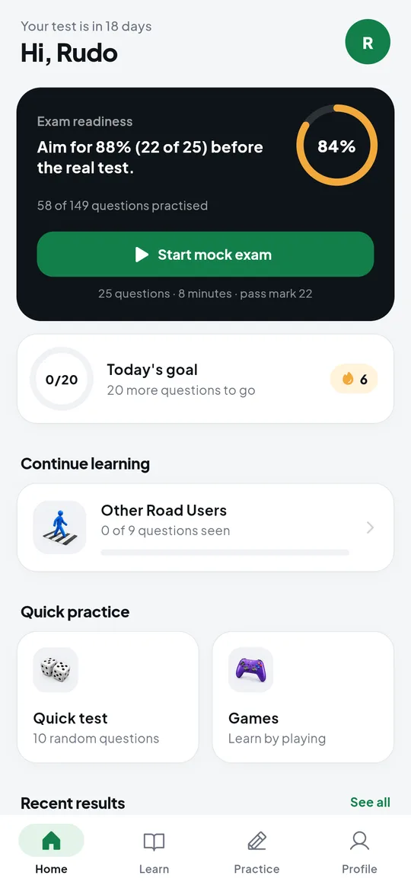
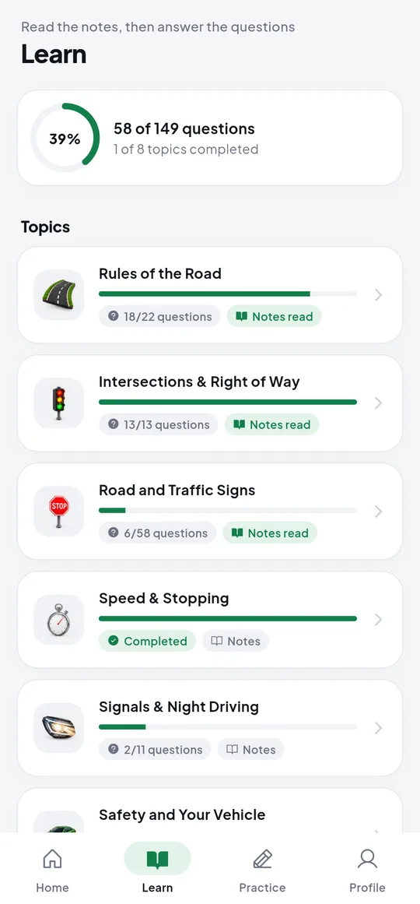
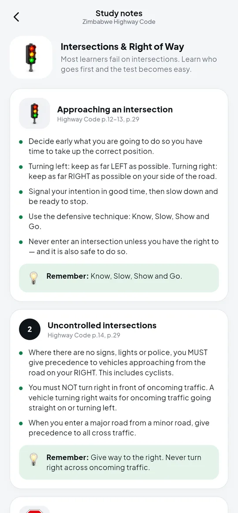
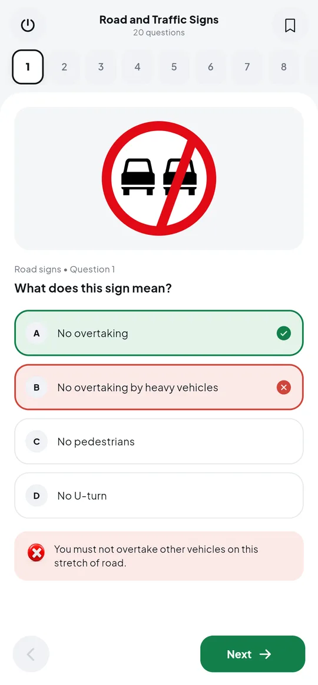
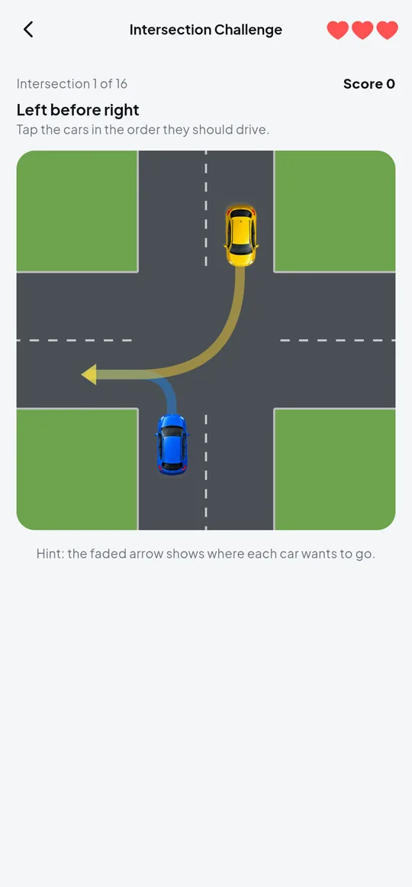
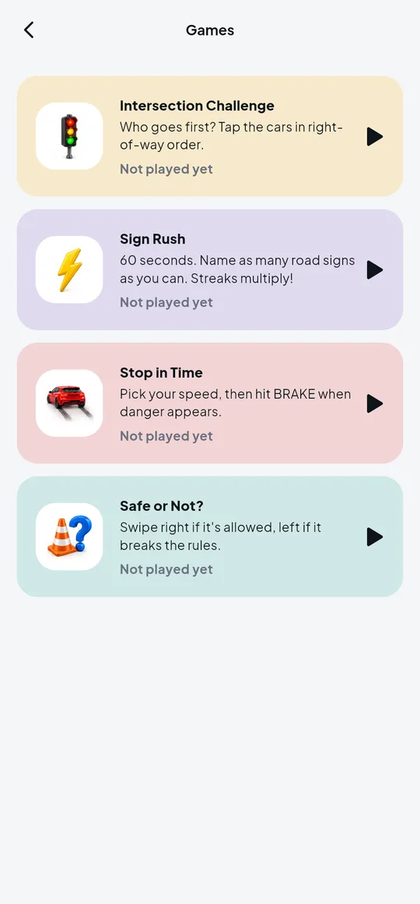
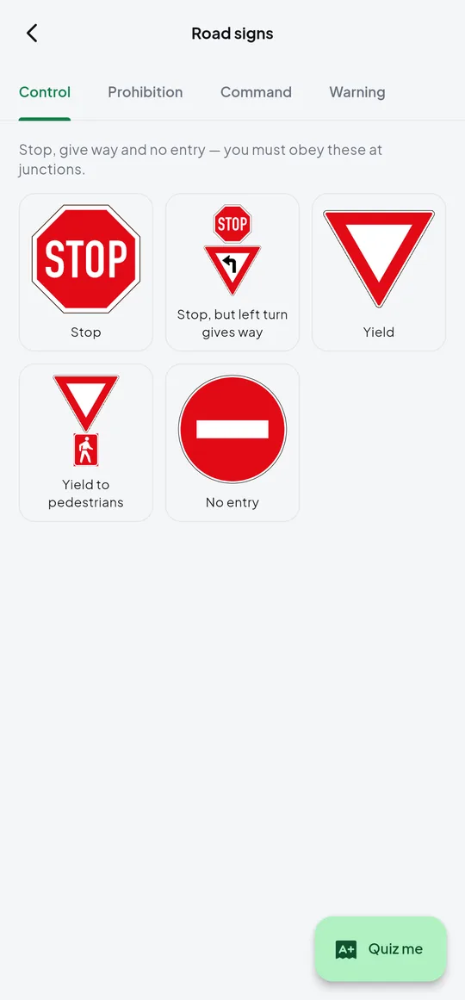
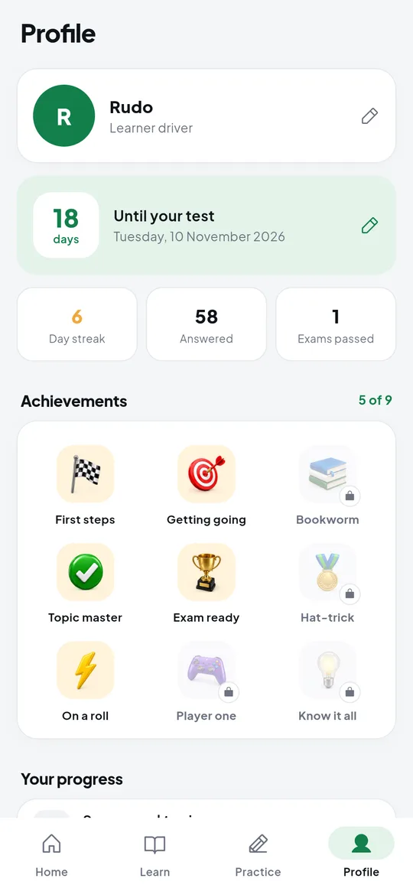
In dark mode on a real phone, from first launch.
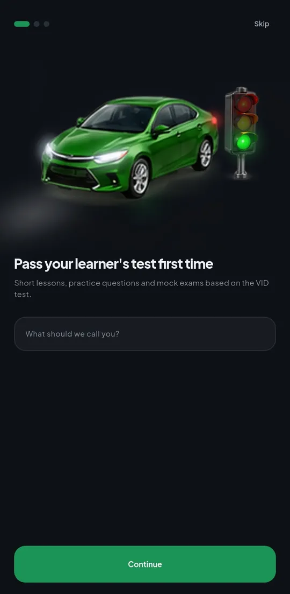
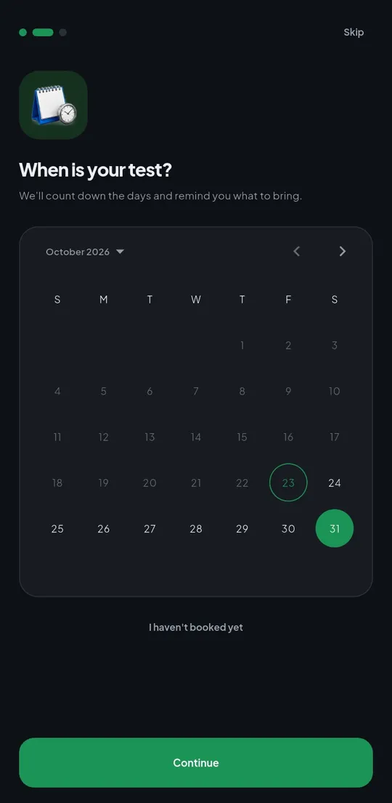
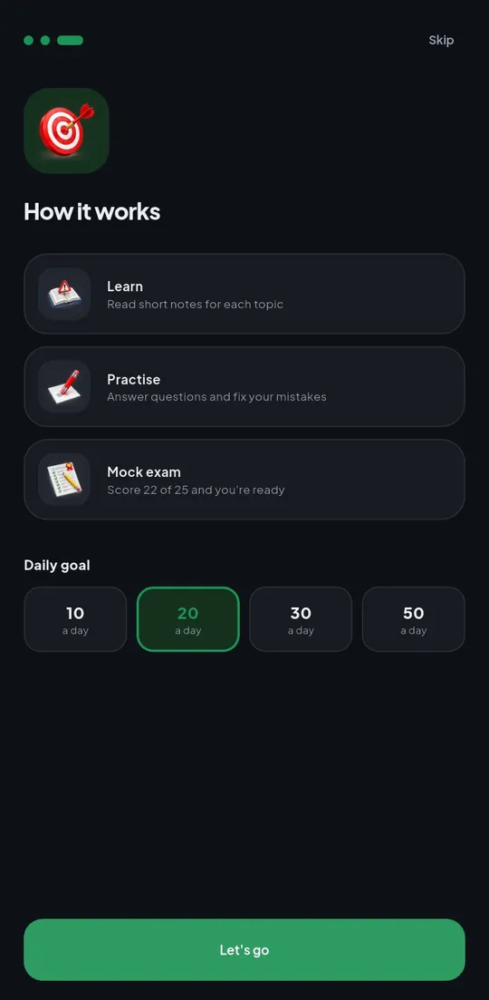
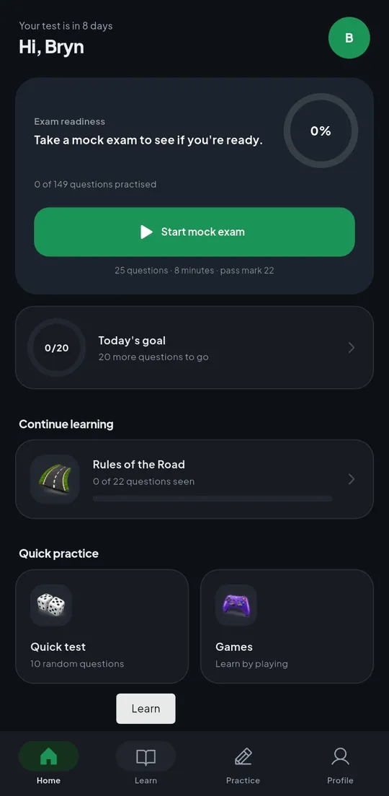
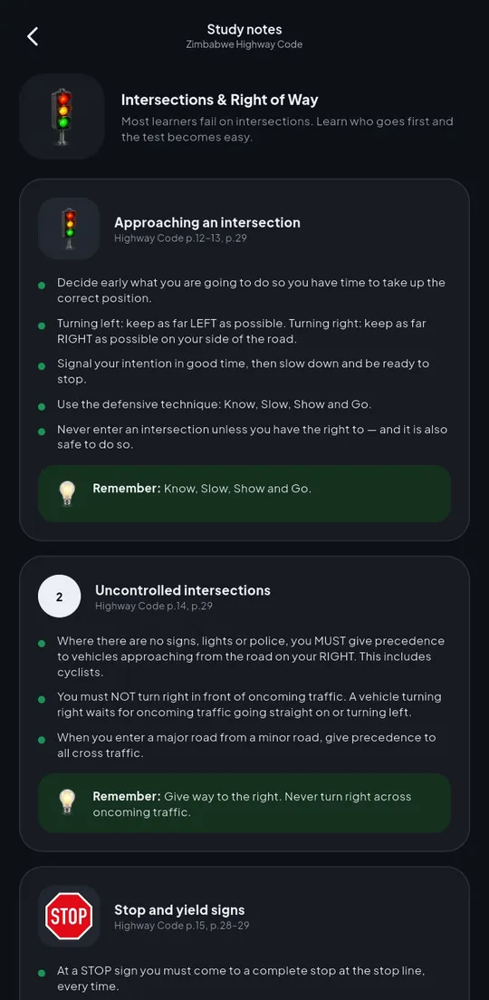
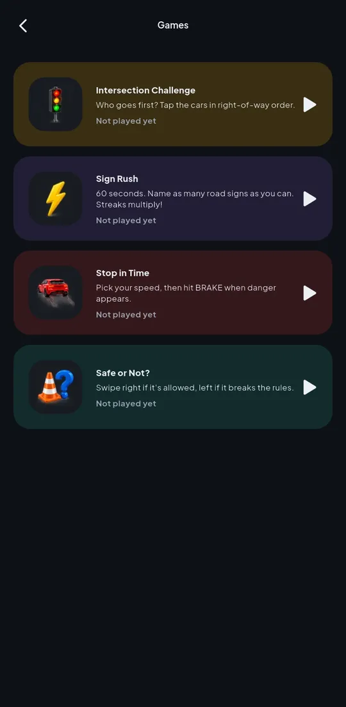
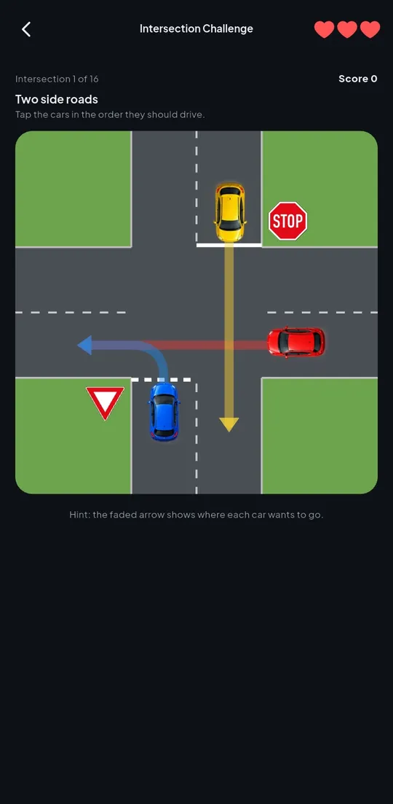
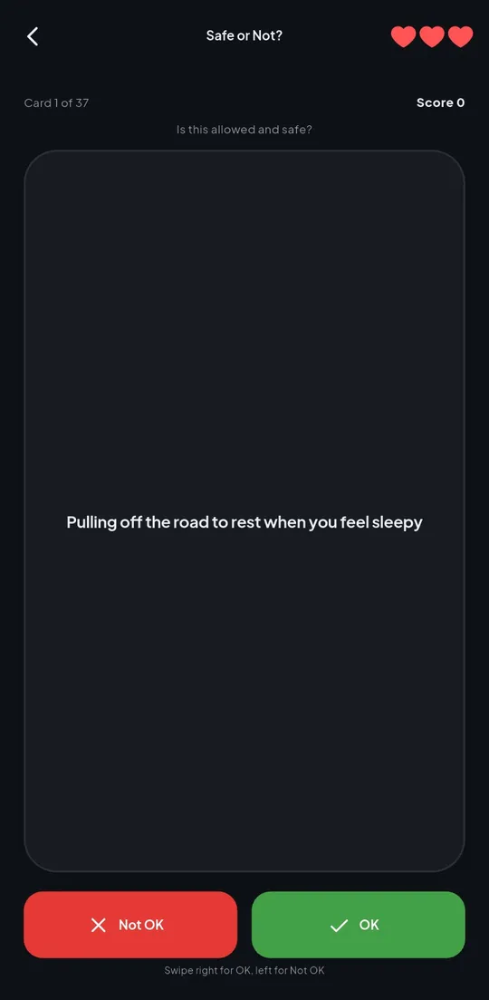
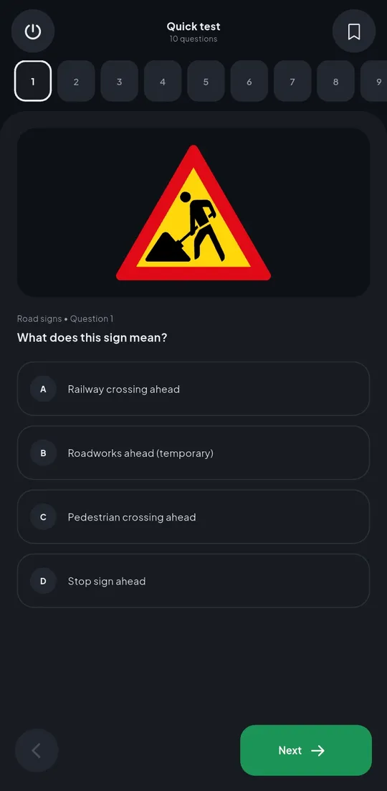
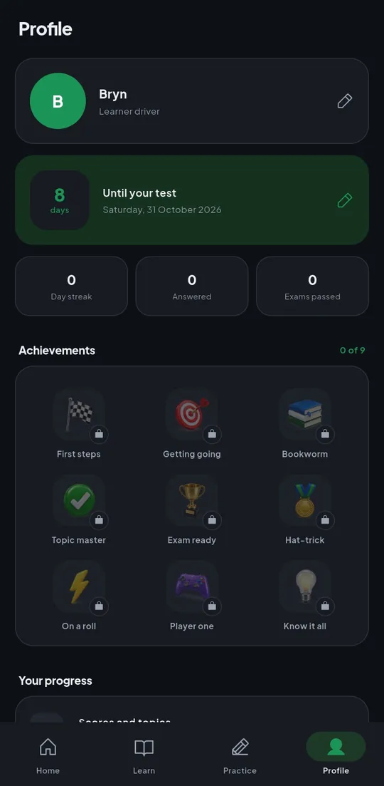
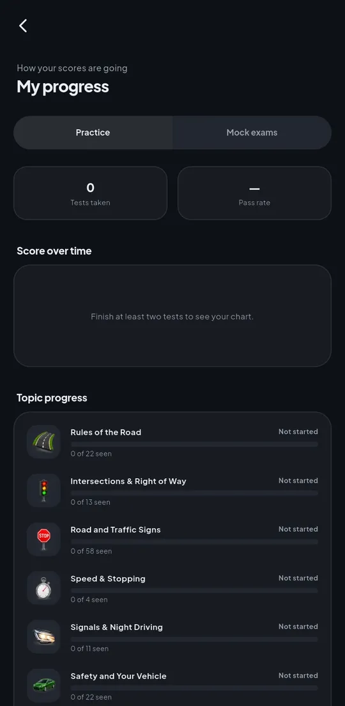
04 — Key decisions
In plain English, without the jargon.
Everything is inside the app, so it works with no data bundle. There is no sign-up, no ads and no analytics, and progress is saved only on the phone.
The Highway Code is copyright, so the notes and questions are written in our own words from its rules, with page numbers so learners can check the book. The wording follows the test: traffic circle, yield, hooter, robots.
Reading alone is boring. Intersection Challenge teaches who goes first; Stop in Time uses your real reaction time and the Code's stopping distances; Sign Rush and Safe or Not? drill the signs and rules against the clock.
Most learners get apps from a friend on WhatsApp, so size matters. One 20 MB file installs on any Android phone, old or new.
The road signs are the official SADC designs from Wikimedia Commons (public domain), and the 3D pictures were made for the app, with no third-party logos.
05 — Tech stack
Flutter for Android, with light and dark themes and layouts checked down to small phones
Progress, bookmarks, mistakes, notes read and best scores saved on the phone; works offline
149 questions, study notes for 8 topics and 52 SADC road signs as sharp vector images
Drawn in Flutter: a top-down intersection with right-of-way rules, and a braking scene using stopping-distance maths
Optional daily study reminders using the phone's own notifications, no internet needed
More than 60 automated tests, including drawing every road sign and checking screens on small phones
06 — What's next
Mutyairi is out now as a free Android download. These are on the list but not built yet:
Your project
We follow the same steps for every client, and you see a clickable prototype before you pay for the build.